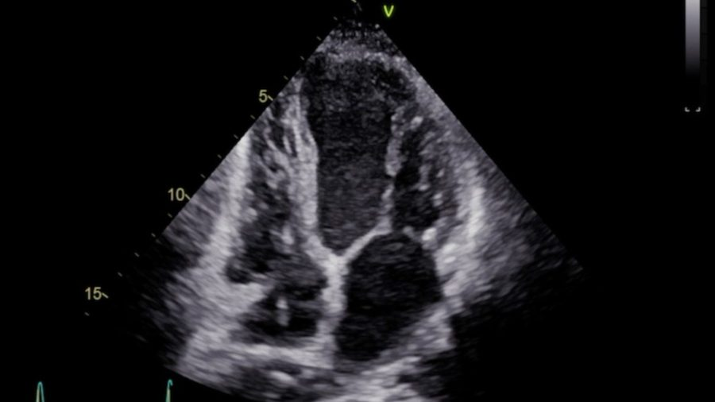
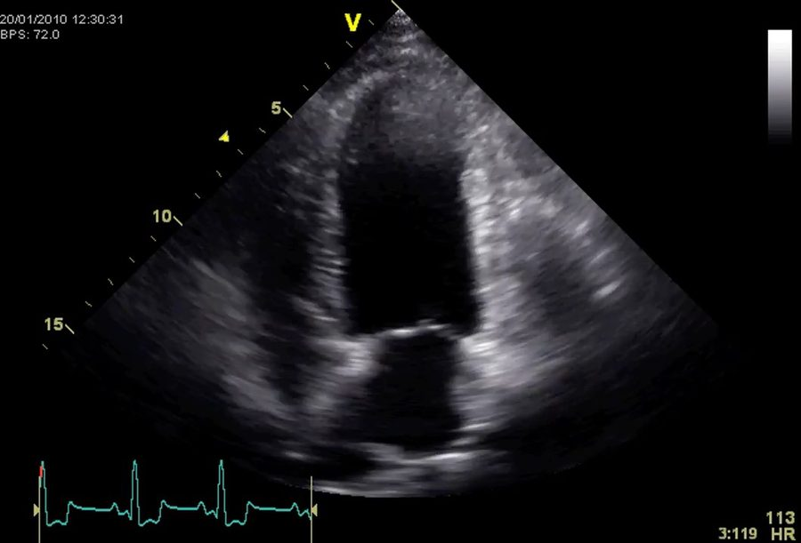

ESAVS Echocardiography · Chapter 02
檢查前的姿勢、剃毛與鎮靜方案；右側長軸／短軸、左心尖窗口與左顱側切面的取得技巧。
側臥（lateral recumbency）影像品質最佳，探頭置於動物下方；不建議站姿掃描（易移動、肺臟介入影響畫質）
毛量厚者建議剃毛以提升接觸與畫質；先擦醫用酒精，再大量塗抹超音波耦合劑；短毛犬可不用剃毛
由飼主或助理將動物前肢往頭側輕拉，讓肘關節離開檢查重點區域
| 情境 | 方案 |
|---|---|
| 無症狀犬需要鎮靜 | Hydromorphone 0.05 mg/kg + Midazolam 0.2 mg/kg，IM 或 IV |
| 攻擊性 / 無症狀犬 | Hydromorphone 0.1 mg/kg + Midazolam 0.2 mg/kg，同針筒 IM |
| 需要快速鎮靜 | Butorphanol 0.3 mg/kg + Diazepam 0.3 mg/kg IV（不可混合，需沖管分開給藥） |
| 充血性心衰竭犬 | Butorphanol 0.2 mg/kg + Midazolam 0.2 mg/kg IM（若喘，先給 furosemide 再做超音波） |
| 情境 | 方案 |
|---|---|
| 無症狀貓 | 通常不需鎮靜 |
| 不合作貓 | Butorphanol 0.2 mg/kg + Dexmedetomidine 5 µg/kg IM |
| 幼貓 | Acepromazine 0.05–0.1 mg/kg SQ 或 IM |
| 充血性心衰竭貓 | Butorphanol 0.2 mg/kg IM（喘者先給 furosemide） |
探頭朝向肩膀方向，畫面呈「子彈形」，較快取得但易受呼吸偽影干擾
探頭朝肋骨前一格、向後看，畫面心尖較圓，呼吸偽影較少；旋轉至短軸時也要記得持續「向後看」
| 切面 | 可見構造 |
|---|---|
| 心尖層 | Apex |
| 乳突肌層 | Papillary muscles（蕈菇狀，"mushroom"） |
| 腱索層 | Chordae tendineae |
| 二尖瓣層 | Mitral valve |
| 主動脈層 | LA/AO（左心房／主動脈，主動脈呈賓士星形，LA 如鯨魚） |
| 心底層 | 肺動脈（Pulmonary arteries） |
| 切面 | Marker 位置 | 說明 |
|---|---|---|
| 5-Chamber view | 約 7 點鐘方向 | 可見主動脈流出道，纜線幾乎與檢查台平行 |
| 4-Chamber view | 由 5-CH 微調 | RV 應置於畫面中央可見；逆時針旋轉至 RV 消失即進入 2-CH |
| 2-Chamber view | 約 5 點鐘方向 | 持續逆時針旋轉取得 |
| 3-Chamber view | 約 3 點鐘方向 | 持續逆時針旋轉至主動脈出現在 LV 右側 |
由 4-CH view 往前滑 1–2 個肋間，並略往後看；RV 腔室應呈三角形，不應看到 LV 流出道
Marker 3 點鐘：先傾斜 45° 見主動脈根部；抬高纜線見肺動脈；放低纜線見右心耳
Inflow-outflow 切面：探頭朝尾端可見三尖瓣，朝頭端可見傾斜的肺動脈
劍突下切面，特殊情況輔助使用

